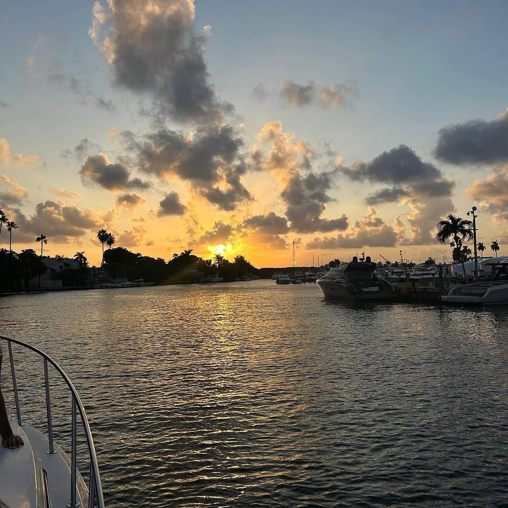

Scattering ashes off Miami, without a schedule
A private boat, a slow run past the three-mile line, and as long as you need once the engine is off. No package, no script, and nobody standing over you with a clipboard.
The rule that decides where we go
Federal law sets the line. Cremated remains may be scattered at sea no closer than three nautical miles from land, which is why this cannot happen at the sandbar or anywhere inside the bay, however much easier that would be.
From Miami that is roughly a thirty to forty minute run depending on the water. The captain also has to notify the Environmental Protection Agency within thirty days of the scattering. He files that report; it is not paperwork you are left holding.
What the day is actually like
We leave on time, run out quietly, and stop the engine. After that there is no schedule. Some families say something, some play a song, some stand there and say nothing at all, and none of those needs explaining to us.
There are usually four to eight people aboard, though the Chris Craft 45 takes up to thirteen. It has a proper head with a shower and a cabin, which matters more than it sounds on a day when somebody may need a few minutes out of sight.
What can go in the water
Flowers and petals are fine, and most families bring them. Anything that will not break down in seawater is not: no plastic wrap, no ribbon, no cellophane sleeve from the florist. If you want to put the urn itself in the water it needs to be a biodegradable one made for the purpose.
We have done this a handful of times, not hundreds. If you have a question we cannot answer, we will tell you that rather than guess at it.
Questions families ask
How far out do we have to go?
At least three nautical miles from shore. That is the federal minimum for scattering cremated remains at sea, and from Miami it is roughly a thirty to forty minute run each way.
Does anyone have to be notified?
Yes. The Environmental Protection Agency has to be told within thirty days of the scattering. The captain files that report, so it is not something the family is left to work out.
Can we bring flowers?
Yes, as long as they break down in seawater. Loose flowers and petals are fine. Plastic wrap, ribbon and florist cellophane are not, so unwrap them before you come aboard.
How many people can come?
Up to 13 on the Chris Craft 45, which has a head with a shower and a cabin below. Most families come out with four to eight.
How long does it take?
Four hours is the shortest booking and it is usually enough, counting the run out and back. If you would rather not watch the clock at all, take five.
There is no form to fill in
Send a message when you are ready and we will answer plainly: what it costs, how far out we go, and what you are allowed to put in the water. Nothing is booked until you say so.
Other celebrations
Bachelorette boat party
Up to 13, the whole day photographed, and the bride organising nothing.
Birthday boat rental
Cake kept cold, your playlist, and the engine cut with downtown behind you.
Sunset cruise
Forty good minutes, timed backwards from the sun. The shortest charter we run.
Sandbar day
Waist-deep water, white sand under it, and the floating pool in.
Family boat day
Shade all day, child-size life jackets as standard, and nobody in a hurry.
Skyline & photos
Star Island, the big houses, and the hour the light lands on the city.
Corporate days at sea
Up to 13, booked with the captain, invoiced properly, no event agency in the middle.
Romantic evenings at sea
The whole boat for two, the cockpit table, and a captain who stays out of the photographs.